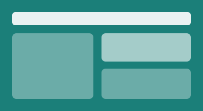
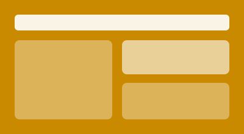

EasiBoost Mobility website
Website for my electric tricycle conversion and solar battery-swap startup in Port Harcourt.
Three things I have built. The images are placeholder illustrations until I add screenshots.

Website for my electric tricycle conversion and solar battery-swap startup in Port Harcourt.

Interviews with 127 commercial keke drivers across 5 routes. 72% said they would switch to electric, which shaped the business model.
A JavaScript task manager that saves your assignments in the browser. It is the planner on this site.